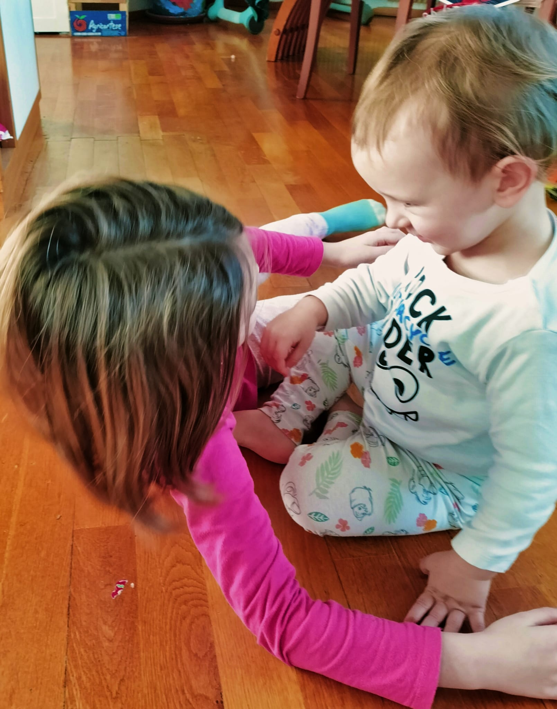

Famiglia, eternità e memoria 🌅
Oggi è una giornata piena di significato per me e per la storia della mia famiglia. Vorrei custodirla condividendo un’esperienza accaduta qualche giorno fa. 👇
Ero con i bambini. 👧👶 Mio marito era via per lavoro per qualche giorno. Quando è arrivato il momento di portare fuori il cane, mi sono accorta che i bambini non avevano nessuna voglia di venire con me. ❌
Dopo un bel momento di gioco tra loro, li ho fermati con dolcezza, senza interrompere bruscamente la loro complicità. 🏃♀️🚶♀️🧎♀️ La più grande ha accettato subito il mio invito a sedersi in cerchio sul pavimento. Il più piccolo ha impiegato un po’ di più: non voleva rinunciare al gioco in cui era completamente immerso. Poi ha ceduto e si è seduto, completando il nostro piccolo cerchio. ☯️
Ho chiesto loro di tenersi per mano. 🤝 Non in modo distratto, ma stringendosi come a fare una promessa che passasse attraverso quelle mani. 🔥 Abbiamo riso, poi siamo diventati seri. Ho chiesto loro di guardarsi negli occhi. 👥
🗣 «La mamma ora esce e non ci sarà per un po’. Quando la mamma e il papà non ci sono, noi siamo la nostra famiglia. Maja per Joel. 👧 Joel per Maja. 👶»
Alla fine, la più grande si è lanciata sul piccolo in un abbraccio di quelli che quasi mordono. Joel si è lasciato prendere, aggrappandosi a tutto ciò che poteva della sua sorella maggiore. ✨ Con gli occhi lucidi, li ho stretti entrambi. 🥹
Tutto è durato forse cinque minuti. Il tempo, quando è pieno, è eterno. 🌅 Questo ricordo vivrà in me per sempre. 🙏
È quell’eternità che oggi celebro nella sua tristezza, in questo giorno in cui, tre anni fa, mia madre se n’è andata. Una tristezza che mi ricorda quell’abbraccio, che come tanti altri — e forse più di altri — porto con me oltre il tempo. 💜